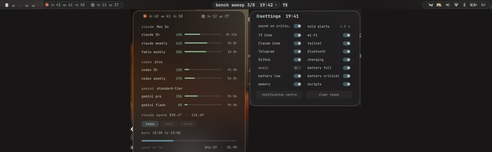

A top bar with a dynamic island: your coding agents, your AI limits, your music and your system in one quiet strip. Built for Omarchy, runs on any Hyprland.

Omarchy bar pluginQuickshellGPL-3.0no sudo, no install hooks
Claude Code and T3 Code sessions, local or on a remote box over ssh, become one pill: ✱ working . A second agent lives in a satellite bubble. Every change of state is a motion, not a jump.
island-task start bench "bench sweep", then progress, eta, done
Also: battery low and full, charger plugged, wifi joined or dropped, bluetooth devices and their batteries, RAM pressure, GitHub notifications, ntfy topics, a host that stopped answering. Each source has a switch.
Session and weekly windows for the two subscriptions you pin, the full list in the panel with reset countdowns, Claude spend per day, week and month from your local transcripts, and the burn rate of the current 5-hour block.
| provider | source |
|---|---|
| Claude | Claude Code login |
| Codex | Codex login, app-server, session logs |
| Gemini | Gemini CLI login |
| Kimi, GLM, Grok, Copilot, MiniMax | their CLI logins or API keys |
| anything Omarchy collects | omarchy-agent-usage-* records |
Credentials are only read. Tokens are never refreshed or rewritten; an expired login keeps the last numbers until their window resets and says what to run.
Click the island: every alert source is a switch, every limits provider is a switch with a pin, the remote host, the probe host and the font are text fields. The file behind it is ~/.config/island/island.json if you prefer.
omarchy plugin add \ https://github.com/grechman/island.git --enable omarchy bar set # pick io.github.grechman.island
Standalone: clone into ~/.config/quickshell/island, copy the two systemd units, add one exec-once.
One scene. The bar is one Quickshell scene with one state file, so pills can morph into each other, widths animate at constant edge speed and nothing desyncs.
One daemon. A single Python process watches agents, players, batteries, hooks and the remote host and writes scene.json; the renderer only draws.
Honest about failure. Missing tools switch features off and are listed in settings; rate limits are respected; nothing is written outside ~/.cache/island and ~/.config/island.